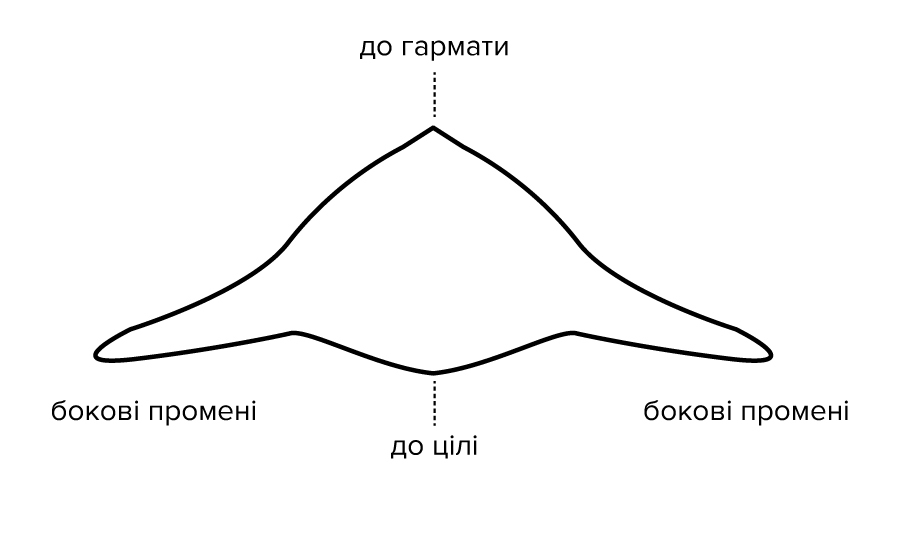

6
Супутникові знімки також дають можливість моніторити позиції
росіян, ближчі до лінії фронту, визначати їх опорні позиції,
артилерійські позиції, бази й навіть окремі окопи.
Ми проаналізували доступні супутникові знімки в період 1-10 липня
2022 року та спробували визначити, як влаштовані позиції росіян
між Миколаєвом і Херсоном.
7
Час, коли, відповідно до радянської військової доктрини, артилерія
мала закопуватися в землю й “утримувати позиції”, минув. Зараз
артилерія діє мобільно: виїхали на вогневу позицію — відстрілялися
— повернулись.
Це ускладнює контрбатарейну боротьбу, адже на реагування є лічені
хвилини. Артилерійські позиції легко знайти за супутниковими
знімками: їх видають сліди від коліс.
8
На знімку артилерійські позиції біля села Миролюбівка
9
Або інші — теж поруч. Як ми бачимо, ці позиції видають характерні
вісімки від гармат або систем залпового вогню.
11
На цьому знімку видно навіть саму техніку. На жаль, якості знімків
недостатньо, щоб однозначно визначити моделі техніки, але
найімовірніше, там є кілька вантажівок.
12
Окопи легко виявити на супутникових знімках високої роздільної
здатності — мінімум 50 см на піксель. При меншій роздільній
здатності їх просто не видно.
Приклад окопів —
опорного пункту на захід від Дар’ївки — прикриває дорогу з Нової
Каховки до Херсона.
13
Окопи лише за вимушених обставин копають посеред поля або на
відкритій місцевості. Їх добре видно з супутника й тим паче за
допомогою дрона.
Тут окопами прикрито військову базу
росіян біля села Вавилове — на південний схід від Снігурівки.
14
Оскільки окопи на відкритій місцевості — чудова ціль для артилерії
й ударних безпілотників, більшість опорних пунктів розташовано в
посадках. Виявити їх із супутника важко. Але є багато
демаскувальних факторів.
15
По-перше, самі опорні пункти можуть бути погано замасковані,
особливо якщо на них перебуває військова техніка.
16
Також демаскувальним фактором є результати обстрілів позицій
українською артилерією.
17
Позиції демаскують сліди від пересування техніки.
Російські військові не можуть безпечно використовувати
дороги для під’їзду до своїх позицій — насамперед через
особливості рельєфу та посадки, які обрамляють
сільськогосподарські поля.
18
Росіяни змушені “зрізати” перехрестя через поля, що також демаскує
їхні опорні позиції.
19
Росія намагається використовувати для своїх військових баз
інфраструктурні об’єкти. Військову техніку помітно ліворуч від
під'їзної дороги — дуже схоже на вантажівку.
20
Тут також помітно військову базу
21
Найвідоміша російська база — Чорнобаївка
22
Результати української контрбатарейної боротьби помітні по всій
окуповані території біля лінії фронту.
23
На цьому знімку ми бачимо великі кратери від артилерії, результати
авіаційного удару та кратери від менших калібрів. Велике біле коло
— це поле зі специфічною системою поливу, де труба з
розприскувачем обертається навколо центральної осі.
Також можна визначити, що це саме українська контрбатарейна
боротьба, якщо визначити напрямок, із якого здійснювали обстріл.

Під час вибуху снаряда з невеликим перевищенням — це ствольна
артилерія — під час вибуху снаряд утворює два промені праворуч й
ліворуч від вирви. Та сторона вирви, яка спрямована до гармати, з
якої здійснювали вогонь, схожа на кут, а сторона, спрямована до
цілі, — напівкругла. Вогонь на цій ділянці здійснювали з
північного заходу.
24
Якщо провести пряму лінію між центром кратера та його променями, а
потім утворити трикутник із вираженим кутом, то можна зрозуміти,
що ці вирви — від снарядів, випущених з українських гармат по
російських позиціях.
А щодо мінометного вогню визначити напрям, з якого стріляли, за
вирвою важче. Звісно, можна допустити, що це вирви від українських
мінометів, але за супутниковими знімками це підтвердити складно.
Так само з великою вирвою від бомби чи ракети — вона має округлу
форму. Нижче наведено картинку з радянського підручника з
військової справи з прикладами вирв від різних калібрів. А на
супутниковому знімку перед нами — результати роботи 152 мм або 155
мм артилерії.

25
Поблизу в посадці, найімовірніше, перебувають російські позиції.
26
Інший приклад контрбатарейної боротьби. Це російські позиції на
південь від села Солдатське. Трикутники вказують на напрямок, з
якого вели вогонь, — тут він перехресний.
27
Російські блокпости на дорогах виявляти важче — це потребує
постійного порівняння з довоєнними супутниковими знімками. Ми для
прикладу знайшли кілька блокпостів на Херсонському напрямку.
Блокпост біля Антонівського мосту на лівому березі
28
Блокпост біля Дар’ївського мосту
29
Ще один блокпост біля Дар’ївського мосту
30
Блокпости на розв’язці біля в’їзду в Херсон
31
Тут можна детальніше дослідити карту й переглянути російські
позиції.
Подвійний клік на супутниковому знімку -
наближає зображення.